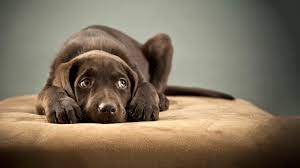
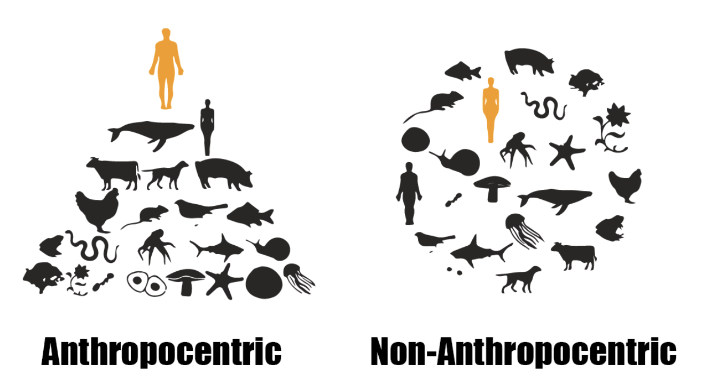
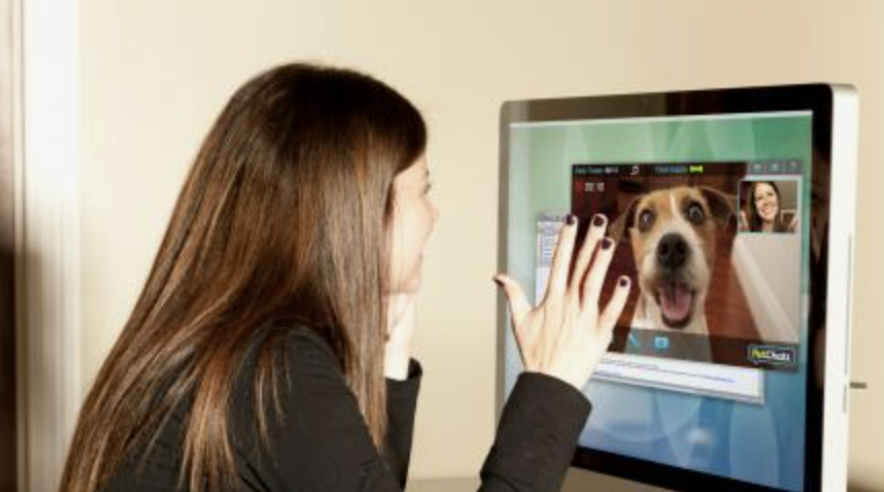

Exploring Design for an Embodied Tool to Regulate Separation Anxiety in Dogs
Class project - Design for Emotion Regulation in Dogs
Remote interaction with dogs
Summary
We conducted online interviews with 3 participants who own a dog and came up with 4 design requirements that are necessary while designing embodied playful artifacts for owners that want to interact remotely with their dogs while they are away. Following are the 4 design requirements -
- Initiating cue - These are embodied cues used to instantiate an affection habit.
- Feedback - These are feedbacks given by dogs as captured by the video and audio cameras and displayed through an interface to the owners.
- Sustained engagement - These are engagement activities that owners use to capture the attention of dogs while involved in a playful activity.
- Culmination - These are embodied cues used to culminate an affection habit.
My responsibilities
- I realized the need for an emotion regulation tool in the lives of dog owners who often have to leave their dog behind in dog boarding facilties or with their relatives and friends, often making their dogs emotionally stressed and anxious.
- I was responsible for reviewing the existing literature in animal computer interaction and analyzing studies that have in the past designed games and products for emotion regulation in various types of pet animals, like orangutans, hamsters, chicken, dogs, cats etc.
- I designed the interviews after consultation with Dr. Isbister, the project advisor.
- I found out that most of the work done in animal computer interaction was driven by human priorities and that there was huge gap, enabling an ever increasing need to design more products that leverage non-anthropomorphic style of designing animal products.
- I was responsible recruiting the participants, recording and conducting the interviews and further coding emergent themes in the transcribed interviews to come up with the 4 design classifications.
I worked on this project with Dr. Katherine Isbister (Professsor, Computational Media, UC Santa Cruz), as part of the class project in Social and Emotional Implications of HCI. Dr. Katherine Isbister helped me focus and streamline my work towards the non-anthropological aspect of design.
Non-anthropocentric app
Humans consider dogs as very a much a part of their own family. Hence, there has been a massive increase in dog tech products in the recent years. However, studies have shown that most of these products suffer from disembodiment and task-automation that helps in simplifying human tasks, rather than increasing dog well-being. We specifically wanted to design an artifact for enabling well-being of dogs with separation anxiety. Hence, we explore the design of an embodied artifact that helps people in engaging with their dogs while they are away from home.
Existing Dog Products


- Social media/publications - Products like 'DogBook' host dog profile and makes dog connections in the same way as humans do on Facebook. 'Dogster' is used to publish latest dog related articles where people can come and get advice on dog behavior, health, news and entertainment.
- Noise shielding kennels - Products like 'ZenCrate' are designed to shield the sensitive dog hearing abilities. They do this by using noise cancelling and vibration inducing capabilities.

- Human mimicers/attention grabbers/distracters - Products like 'DogTV' are types of attention grabbers that are used to mimic activities which humans do, for example watching TV. Dogs are social animals, and switching TV on, to do something that dog can be engaged in, creates an atmosphere as if humans are present.
- Chewies/plushies - Products like 'iFetch', 'Puppod' and 'GoBone' are the kinds of toys cause the necessary mental and physical stimulation that dogs might need to regulate their emotions. iFetch is an automatic ball thrower, Puppod uses light and sound sensors in interactive puzzles, and GoBone can be controlled remotely by users to play with their dogs.

- Chatters - Products like 'Petcube' are used to interact with dogs remotely via the use of video and audio channels in webcams. Monitors/Remote feeders - Products like Furbo are used to monitor and feed dogs remotely.
Initiating Cue
The affection habits that owners employed usually started with an initiating cue that arose the initial excitement within the dog.
Quote
''Whenever I want to signal D2 that its time to eat, I would just say 'D2, do you wanna have food?', and slide it's bowl away from the wall towards the kitchen. He would just light up from his rug as soon as he hears the sliding bowl noise.''
Quote
''I like to clap multiple times whenever it's time for a walk in the garden, and then call his name in an upbeat way. If at times it didn't work I would just swing it's red rope in front of him and he would straightaway get up for a walk.''
Implications for design
Audio effects and voice cues, used to mimic sound effects, tone signalling, and name calling can be used as effective initiating cues to prime the dog for an incoming activity that resembles the way their owner initiate activities for them. This also complements the theoretical model of Dr Gregory Burns which argues that dogs can be primed with fake stimulus to enable them to perform a task and thereby regulate emotions in them. However, this can get misused as it tends to be an anthropomorphic way of making dogs do things, irrespective of their actual need. Hence, we need precise feedback inputs of when to initiate and culminate such tasks so that they are ethically grounded in dog welfare and not result in task-based automation of dog to-do habits. This leads us to our next theme called "Feedback".
Feedback
Feedbacks were an important criterion for understanding dog emotions that helped owners to better engage with their dogs. They specifically used their dog feedbacks to check when their dog is ill, when they are not as active as they should be, when they have eaten less, or when and how they are responding to playful acts of owners.
Quote
''It's important to be wary how your dog is responding, because there are small signs that help you detect whether a dog is behaving normally or not. I think eating is always a safe activity that dogs respond to, but checking their appetite can be a very good way to measure if they are in stress or not. Even while playing, it is important to notice if, lets suppose the dog is not interested in playing with a particular toy. Again the safest bets were pullers, chewers and then rolling ball. If the dog is not responding to even these toys, something is clearly wrong.''
Quote
''My dog had a unique way to display that it is excited. It would flinch its dorsal part of the body towards the left whenever it would be too excited and tilt it's face repeatedly if she would wait for a cue from me to do something.''
Quote
''D1 would wag its tail whenever excited. Even if seated on the floor, the tail was a good way to distinguish whether she is interested in a particular task or not. The feedback cues were helpful for me better gauge their emotional responses and introduce the task as and when they wanted.''
Implications for design
The dog owner is the best judge for judging when and how to regulate dog emotions. Hence, there needs to be a pet cam with a close up view of the dog from multiple angles, and an inherent mic that captures their subtle sounds for owners to figure out dog's feedbacks when regulating their emotions remotely. Further, there are opportunities to embed temperature trackers and heart beat detectors in dog jackets that can act as secondary source of information.
Sustained engagement
One of the main characteristic that contributed to the unique style of dog-owner pair affection habit was sustained engagement.
Quote
''I like teasing my dog when I play with it. I think this is the reason it likes playing with me and not with my wife (laughs). Even when she tried copying me and doing that once, my dog was all confused and jumped at random cues rather than the ones she intended to capture it's attention.''
Quote
''I like goofing around with my dog while it plays with the rope puller. I would take it to a height, and it would watch me lower it slowly and as soon as it would try to jump and hold it with it's mouth, I would raise it again. Finally, it would catch it when I would think the right moment to lower for it to pull the rope.''
Quote
''If the dog responds well to your cues, then it makes sense to play around with it. I like to successively play around with it more as I see increase in its excitement levels.''
Quote
''It's a right mix of how much excited they are and how much they should be. I mean if they are not responding, it means they may be tired. It's not good to just throw attention grabbers, like a rolling ball as it is. You should know your dog, and if they are not responding, just let them be for a while. One should know low energy methods of excitement arousal, especially when the dog is ill, and if they don't work, then leave them be.''
Implications for design
There is a need for attention grabbers in dog toy design, but there need to be levels of engagement which need to be regulated by dog owners when away from their dogs. These attention grabbers could be rolling ball, screen attention, owner voice, claps, music and many more aspects coupled with holding times of when to increase, decrease or stop the engagement. Again, owners are the best judges of modulating these attention holders, and there need to be video and audio channels of feedback for clarity to owners remotely.
Culmination
Culmination was the final characteristic of an affection habit that was employed by dog owners conveying an end of a task.Quote
''I would just pat on D2's head twice or thrice after it was tired, and speak 'okay' in a particular tone, to which it would get the hint that the play has finished, its time to go. It would calm down and slowly go back to it's place and sit down.''
Quote
''Sometimes you would just speak in a particular tone signalling an end to a playful activity and the dog would straightaway understand. However, sometimes you might need to speak more sharply. Say ,for example if the dog is eating something that he is not supposed to eat, there is a particular way you signal it to him. It's important to know what voice tone works for what situation.''
Implications for design
Different voice cues of owners can be embodied signalling levels of disengagement with the dog displaying the urgency of the situation. Further, there can be extensions of hands mimicing, head pats or body rubs on dogs that can mimic an end to an activity which the dog is used to.
Multi-interface system embodied design
We formulate the four features, namely, inititating cue, feedback, sustained engagement and culmination, which are essential while designing an embodied artifact for regulating separation anxiety in dogs. This requires multiple interface for engagement of both dogs and owners separately. While the interface helps owners initiate, monitor and culminate artifact actions, the dog interface helps them engage in activities through embodied cues from remotely regulated artifact.
Open-ended interviews
We conducted open-ended interviews with 3 pet owners to get insights on the affection habits of dog owners when they are in physical presence with their dogs. Through these formative interviews, we formalized important aspects of embodied design that need to incorporated in dog toy design to relieve separation anxiety in dogs when left alone. We started the interviews by asking general information from dog owners (participants) about their pet dogs. This included information like dog name, their breed, gender and age. We then progressed to ask stories behind how they adopted their dogs, and how was it was like when they were young. Talking about their dog's behavior when they were puppies acted as an ice-breaker and made the dog owners reveal cute stories and often made them laugh. This made them comfortable and primed them for the remaining interview process to answer following questions with much more details. We asked them open-ended questions that tried revealing their relationships with their dogs. These included the expectations that the pair had with each other, how they showed affection towards each other, and how and when the owners regulated their dog emotions (etc). Participants were also encouraged to share memorable experiences with their dogs. They were prompted with filler word cues like "hmm", "right" (etc.) to encourage them to reveal as much details as possible to get information of incisive affection habits that the owner-pet pair shared.